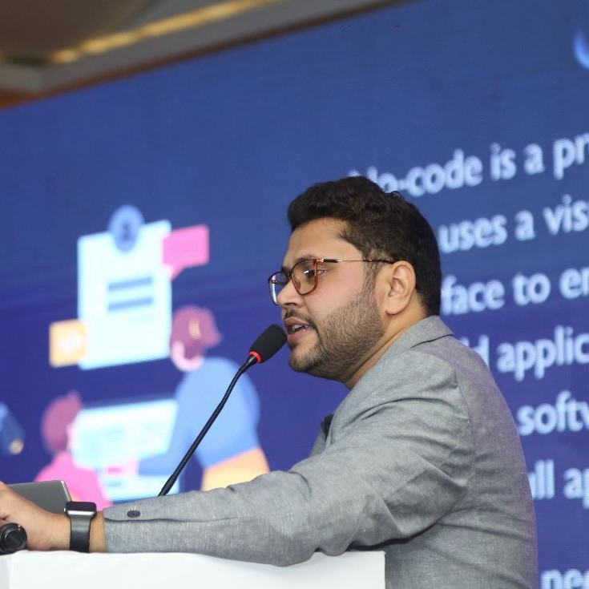
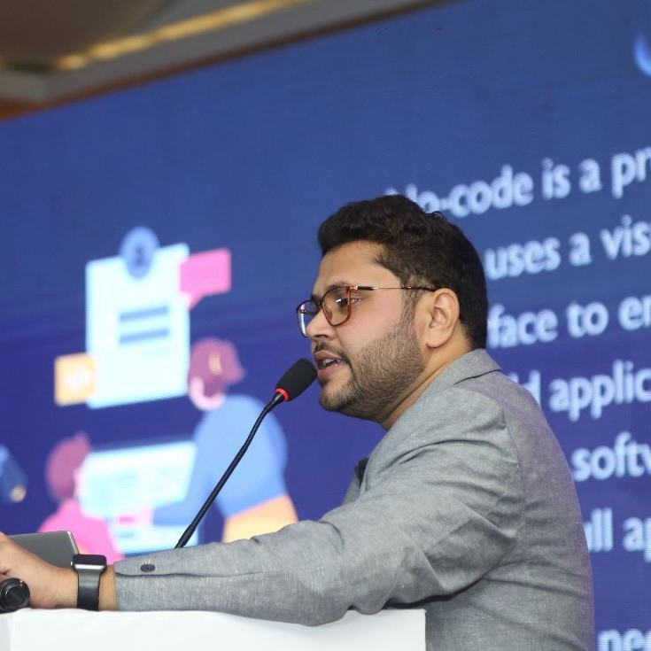

As a global Pre-Sales and Solutions Consultant, I partner with System Integrators (SIs), Enterprises, Captives, and SMBs to design, develop, and implement modern analytics, UX, and embedded BI solutions powered by Infragistics products — Reveal BI, App Builder, and Ignite UI.
- Serve as SPOC for enterprise accounts, delivering 100+ technical presentations, workshops, and training sessions
- Architect end-to-end analytics and modernization solutions across Web, Mobile, and Desktop platforms
- Collaborate with global SIs including TCS, Wipro, Cognizant, Infosys, and Persistent
- Led multi-platform modernization projects for top clients like Allstate, RBS, Deutsche Bank, Morgan Stanley, Ericsson, and Target
- Evangelise Infragistics solutions at developer conferences, webinars, and meetups
 
